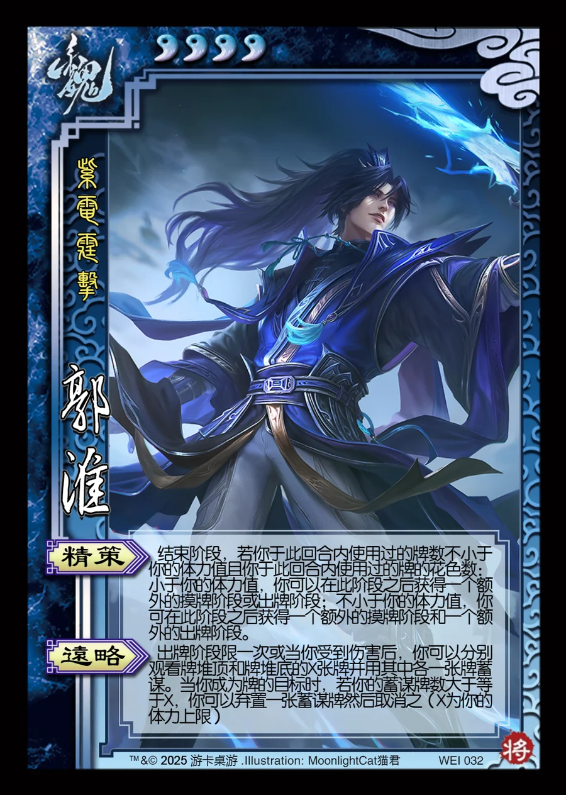

点击卡面查看大图
魏
郭淮
♥4紫电霆击
精策
结束阶段，若你于此回合内使用过的牌数不小于你的体力值且你于此回合内使用过的牌的花色数：小于你的体力值，你可以在此阶段之后获得一个额外的摸牌阶段或出牌阶段；不小于你的体力值，你可在此阶段之后获得一个额外的摸牌阶段和一个额外的出牌阶段。
远略
出牌阶段限一次或当你受到伤害后，你可以分别观看牌堆顶和牌堆底的X张牌并用其中各一张牌蓄谋。当你成为牌的目标时，若你的蓄谋牌数大于等于X，你可以弃置一张蓄谋牌然后取消之（X为你的体力上限）